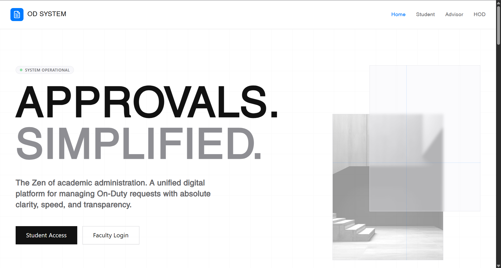

OD System
A modern digital platform for managing on-duty approvals, designed to streamline processes and improve efficiency.
Check my website
🔗 View Demo
Status
A digital On-Duty approval platform that simplifies request management between students, advisors, and HOD through a clean and transparent workflow.
Tagline
“Simplifying academic approvals through digital workflows.
Problem
Students often face delays and confusion in getting On-Duty approvals due to manual paperwork and lack of real-time status updates. This causes communication gaps and inefficient academic administration.
Solution
- Centralized platform for submitting and managing OD requests
- Role-based access for Student, Advisor, and HOD
- Real-time approval tracking and status updates
- Transparent workflow with faster request processing
- Clean dashboard interface for easy navigation
Future Scope
- Reduced approval delays with digital workflow
- Improved transparency in request status
- Simplified communication between students and faculty
- Enhanced efficiency in academic administration